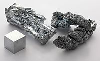

Numero atomico: 30
Massa atomica: 65,38
Temperatura di fusione (°C): 420
Temperatura di ebolizione (°C): 907
Energia di prima ionizzazione (kj/mol): 906
Elettronegatività (secondo Pauling): 1,65
Densità: 7,14
Numeri di ossidazione: +2
Configurazione elettronica: 1s2, 2s2, 2p6, 3s2, 3p6, 3d10, 4s2
Maggiori Informazioni